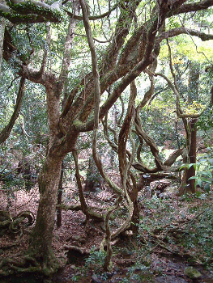
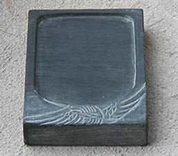

L'enjeu qu'elle représentait était si
important que la très puissante administration chinoise nomma des
"administrateurs de l'encre" chargés d'en surveiller la fabrication.
Préparation
traditionnelle
Sa composition exacte est encore inconnue de nos jours, non sans raison car
il
s'agit d'un secret. Nous croyons savoir,
cependant, que l'encre de Chine contient notamment
* un pigment à base de noir de fumée bien
particulier obtenu par la calcination d'un mélange d'huile de sésame et
d'ivoires divers broyés très finement, donnant, à l'aide de multiples lampes à
huile, une suie aux caractéristiques bien définies. Ce type de noirs a
été utilisé en Chine dès le IIIème millénaire BC avant
même l'invention de l'encre.
Sur le mélange eau/noir de fumée,
lire passage in Les dialogues de Dotapea, chap. I, A propos des liants.
* une gélatine pas clairement identifiée.
Certains évoquent une "colle de boeuf". On mentionne aussi la gelée
de cerf et la colle de poisson... La recette a pu varier au fil du
temps. Lire ci-dessous L'encre de Nara.
* du camphre dilué dans l'alcool et/ou un musc,
des épices, des huiles (on mentionne notamment les huiles de colza et de
sésame), etc.
* du sucre, introduit dans le processus sous forme diluée dans l'eau.

Le noir de fumée et la colle seraient cuits ensemble durant environ
six heures. C'est le point le plus critique de la fabrication car il est très
difficile de mêler noir de carbone et liant aqueux. C'est dans cette phase que
résident les secrets de fabrication les plus importants.
La préparation, après le premier séchage des bâtonnets (ou autres formes),
détermine la qualité de ceux-ci : ils sont placés une semaine dans une cendre
humide changée deux fois par jour, puis, de nouveau séchés pendant 15 à 45
jours en fonction de la qualité recherchée. Ils sont ensuite lissés au
pinceau et polis avec un coquillage avant d'être décorés avec des motifs en
or et en argent (voir photo), puis sont éventuellement enduits de sucre ou
d'autres ingrédients solidifiants.
On mentionne aussi des préparations à base de pin, de graisse de porc, de
fer, de poudre de charbon, etc. Les encres obtenues n'étaient pas ce que nous
nommons "encres de Chine", mais elles furent aussi utilisées en
peinture et en écriture.

L'encre
de NARA
Au Japon, le lieu de fabrication traditionnelle des encres de Chine est à
Nara (information confirmée), une cité très emprunte de
culture bouddhique et de traditions shinto. Le rayonnement de ce centre de production
est international. Donc l'une des meilleures encres de Chine (Indian ink
en anglais) serait fabriquée au Japon. De quoi se poser quelques questions
telles que : parlons-nous d'une seule et même substance, les Occidentaux
n'ont-ils pas une vision un peu confuse de ces produits ?
Quoi qu'il en soit, voici ci-contre une photo prise dans la forêt de Nara (inscrite au patrimoine
international). Parmi les essences uniques que l'on y trouve, il existe un arbre
nommé KUZU. On tire de ses racines une poudre qui permet de réaliser une
gélatine très visqueuse.
Cette gélatine entre-t-elle dans la composition des encres de Nara ? Nul ne
saurait l'affirmer. Si c'est le cas, c'est certainement en très faibles
quantités car elle se liquéfie vers 20 ou 25°C et présente un pH 6,
donc non neutre.
Son emploi est
théoriquement alimentaire. Cependant, la coïncidence géographique est
troublante, d'autant plus que la gélatine est sans doute l'élément le plus
important de l'encre de Chine, celui sur lequel de nombreuses recherches ont dû
être effectuées, celui sur lequel le secret industriel s'est imposé très
tôt, comme nous le disions.
Utilisation
du bâton d'encre

En principe, une bonne encre est brillante à la cassure. Un
petit sacrifice n'est pas inutile. N'hésitez pas à casser le bâtonnet pour
vous assurer de sa qualité.
Il suffit ensuite de diluer le bâtonnet dans l'eau sur une pierre à encre (voir
photo). L'application se fait généralement au pinceau, au calame
ou à la plume.
L'encre de Chine vendue sous forme liquide est plus homogène -
et
plus pratique - que l'encre des bâtonnets dilués.
Fabrication
d'imitations
Voici ci-dessous une recette permettant de fabriquer une encre très
semblable à l'encre de Chine solide. Nous vous la livrons sans aucune garantie
car nous ne l'avons pas testée. Merci de nous
communiquer vos observations expérimentales. Une autre recette nous est
parvenue mais nous ne souhaitons pas la divulguer car elle met en oeuvre de la potasse,
ingrédient bien trop dangereux à manipuler en atelier ou dans une cuisine.
Voici donc la recette sans danger dont nous parlions. Les quantités indiquées
sont des poids et non des volumes.
* Préparer une caséine
et la faire bouillir.
* Incorporer du noir
de fumée (100 parts) et du camphre (3 parts). La quantité de ce
mélange par rapport à celle de caséine est laissée à discrétion du
préparateur. A titre indicatif, nous rappelons que le rapport liant/pigment
en peinture est souvent de 1 pour 2, mais doit absolument être ajusté aux
spécificités du pigment.
* Faire sécher dans des moules.
En ce qui concerne l'encre de Chine liquide, nous avons trouvé des recettes invraisemblables,
dangereuses et incorporant des éléments introuvables. Nous vous livrons la
seule qui nous ait semblé raisonnable à tous points de vue avec la même
réserve exprimée ci-dessus : nous n'avons pas testé ce procédé. Les quantités sont des poids.
Elles sont approximatives et doivent être adaptées aux produits choisis. Il ne
s'agit pas, de toute façon, de réaliser une véritable encre de Chine.
* préparer une colle à la gélatine
* gélatine : 150 parts (ce chiffre sert
d'étalon pour le reste de la recette)
* eau : à votre discrétion, suivant le
tirant désiré (voir Colle de peau).
Utiliser de préférence une eau déminéralisée ou distillée (voir L'eau)
* le temps de cuisson variera en fonction du
type de gélatine employée
* à chaud, incorporer 100 parts de noir
de fumée
* laisser mijoter quelque temps au bain-marie
* ajouter de la glycérine.
Dans les recettes plus anciennes, on employait du sirop de sucre épais.
Dans un cas comme dans l'autre, cet apport est important car il
détermine la fluidité de l'encre. Certaines sources évoquent une
quantité énorme de glycérine (9,5%, à comparer avec les 5% au maximum dans la fabrication
de l'aquarelle). Certes, une encre doit être liquide, mais la substance
dont il est question n'est pas anodine : c'est un trialcool susceptible de
réagir à tout élément acide. C'est pour cette raison qu'il n'est
généralement incorporé qu'à faible dose.
Merci de nous faire part de vos
expérimentations.
Lire aussi Le lavis, La
sépia, Le brou de noix, La
sanguine.
Retour
début de page